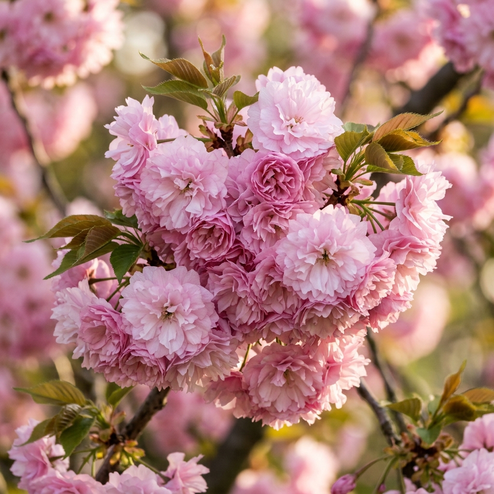
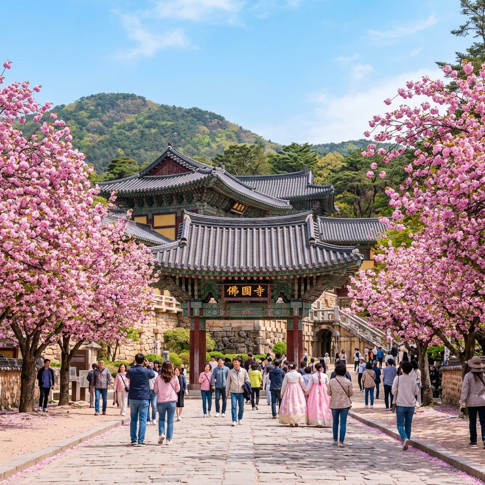
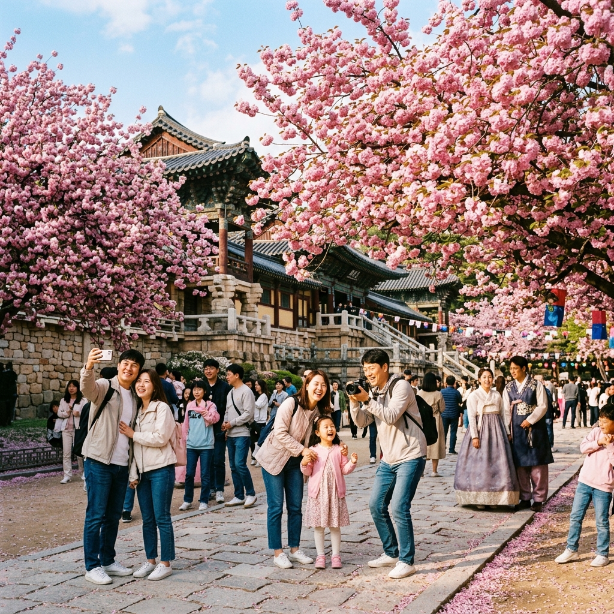

경주 불국사 겹벚꽃 실시간 개화 상황 — 벚꽃 엔딩 후 시작되는 분홍색 솜사탕의 유혹
"벚꽃이 지고 서운하셨나요? 진짜 주인공은 이제부터 시작입니다."
하얀 벚꽃비가 내리고 초록 잎이 돋아나는 4월 중순, 경주는 다시 한번 분홍빛으로 물듭니다. 바로 일반 벚꽃보다 늦게 피어 더 화려하고 풍성한 자태를 뽐내는 ‘겹벚꽃’ 때문인데요. 솜사탕처럼 몽글몽글하게 피어난 겹벚꽃의 성지, 불국사 일원의 실시간 현황과 함께 이번 주말 경주 여행을 위한 완벽한 정보를 담았습니다.

▲ 일반 벚꽃보다 꽃송이가 크고 층층이 쌓인 겹벚꽃은 마치 작은 카네이션처럼 보입니다.
1. 불국사 겹벚꽃 실시간 개화 리포트 (4월 6일 기준)
현재 경주 불국사 일원의 겹벚꽃 개화율은 약 10~20% 수준입니다. 이제 막 작은 꽃봉오리들이 고개를 내밀며 수줍게 인사를 건네고 있는데요. 겹벚꽃은 일반 벚꽃보다 개화 기간이 길고 꽃송이가 단단해서 4월 12일(이번 주말)부터 4월 20일경까지가 가장 아름다운 절정기가 될 것으로 보입니다.
특히 불국사 공영주차장에서 일주문으로 올라가는 경사진 잔디밭 언덕은 대한민국 최고의 겹벚꽃 포인트로 꼽힙니다. 아직은 봉오리 상태가 많지만, 이번 주 따뜻한 기온이 예보되어 있어 개막 속도가 눈에 띄게 빨라질 것으로 예상됩니다.
2. 겹벚꽃, 일반 벚꽃과 무엇이 다른가요?
겹벚꽃은 이름 그대로 꽃잎이 여러 겹으로 겹쳐서 피는 벚꽃의 변종입니다. 왕벚나무와 달리 꽃이 잎보다 늦게 피거나 동시에 피는 특징이 있죠.
- 모양: 솜사탕처럼 동그랗고 풍성한 형태를 띠며 색깔이 훨씬 진한 분홍색을 자랑합니다.
- 시기: 일반 벚꽃이 지고 약 1~2주 뒤에 피어나기 때문에 '벚꽃 엔딩'의 아쉬움을 달래주는 구원투수 역할을 합니다.
- 지속력: 꽃잎이 두껍고 튼튼해서 비바람에도 왕벚꽃보다 잘 견디며 개화 상태가 오래 유지됩니다.

▲ 세계문화유산 불국사의 고풍스러운 건축물과 화려한 겹벚꽃이 만나는 순간을 놓치지 마세요.
3. 불국사 겹벚꽃 관람 및 주차 팁 (현장 실전 전략)
겹벚꽃 시즌의 불국사는 주말이면 인파와 차량으로 몸살을 앓습니다. 쾌적한 관람을 위한 몇 가지 노하우를 공유합니다.
성공적인 겹벚꽃 나들이를 위한 3계명
- 주차는 제1주차장(불국사 공영주차장) 우선: 겹벚꽃 단지와 가장 가깝습니다. 주말 오전 9시 전 도착을 권장합니다.
- 피크닉 매트 준비: 불국사 앞 언덕은 경사가 완만해 돗자리를 펴고 휴식을 취하기 좋습니다. 나무 아래 명당을 차지하려면 서둘러야 합니다.
- 카메라 렌즈는 망원보다는 광각: 커다란 나무 전체와 인물을 담기 위해서는 광각 렌즈나 광각 스마트폰 모드가 사진을 남기기에 더 유리합니다.
4. 불국사 외에 경주에서 겹벚꽃을 즐길 수 있는 곳
물론 불국사가 최고이지만, 인파를 피해 한적하게 즐길 수 있는 숨은 명소들도 있습니다.
- 경주 보문단지 물너울공원: 호수 바람과 함께 겹벚꽃을 즐길 수 있는 여유로운 장소입니다.
- 경주 동궁과 월지: 야경으로 유명하지만 낮 시간대 겹벚꽃이 피는 산책로도 매우 매력적입니다.
- 경주 대릉원 돌담길 후문: 고분과 어우러진 겹벚꽃의 한국적인 미를 감상할 수 있습니다.

▲ 겹벚꽃 나무의 키가 생각보다 낮아 남녀노소 누구나 꽃과 어우러진 사진을 찍기 좋습니다.
5. 경주 겹벚꽃 여행과 함께하기 좋은 여행 코스
경주까지 왔다면 1박 2일로 알차게 즐겨보세요.
| 일정 |
추천 코스 |
비고 |
| 1일차 오전 |
불국사 겹벚꽃 관람 |
가장 인파가 몰리는 곳이므로 1순위 방문 |
| 1일차 오후 |
황리단길 카페 투어 & 대릉원 |
감성 카페와 인생샷 명소 탐방 |
| 1일차 저녁 |
동궁과 월지 & 월정교 야경 |
대한민국을 대표하는 환상적인 야경 코스 |
| 2일차 오전 |
교촌마을 & 월정교 주간 산책 |
한복 체험과 정갈한 한정식 점심 |
미식 추천: 경주에 오면 황남빵과 찰보리빵뿐만 아니라, 요즘 핫한 십원빵과 황남옥수수도 꼭 맛보세요. 황리단길의 아기자기한 먹거리가 여행의 재미를 더해줍니다.
6. 맺음말 — 4월의 두 번째 봄을 경주에서 맞이하세요
하얗게 피었다가 허무하게 지는 왕벚꽃의 끝이 아쉬웠다면, 이제 더 진하고 오래가는 겹벚꽃의 계절을 환영해 주세요. 천년 고도의 도시 경주에서 마주하는 분홍빛 솜사탕은 여러분의 기억 속에 가장 찬란한 4월을 선물할 것입니다.
안내 및 주의사항
본 포스팅은 2026년 4월 실시간 기상 상황과 경주 관광 정보를 바탕으로 작성되었습니다. 벚꽃의 개화 및 만개 시기는 갑작스러운 기온 변화에 따라 2~3일 정도 차이가 날 수 있으니, 출발 전 경주 문화관광 홈페이지의 실시간 사진 서비스를 확인하시는 것을 추천합니다. 또한 불국사는 국가문화유산이므로 수목 보존을 위해 나무를 꺾거나 흔드는 행위는 절대 금지됩니다.
👉 함께 읽으면 좋은 글: [경주 황리단길 현지인 추천 밀면 & 쌈밥 맛집 Best 3]
태그:
#불국사겹벚꽃
#경주겹벚꽃실시간
#경주4월가볼만한곳
#겹벚꽃개화시기
#경주여행코스
#대릉원겹벚꽃
#보문단지겹벚꽃
#실시간경운꽃현황
#황리단길맛집
#경주인생샷명소
#4월가족여행추천
#불국사주차팁
#경주가볼만한곳
#봄꽃여행지추천
#경주포토존